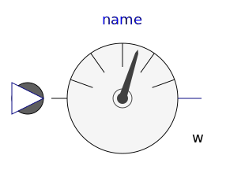
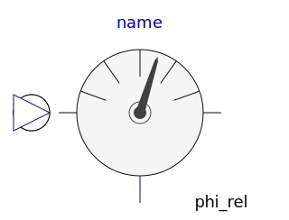
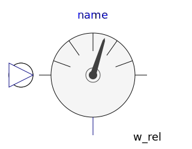
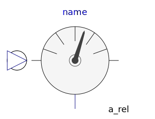
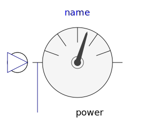
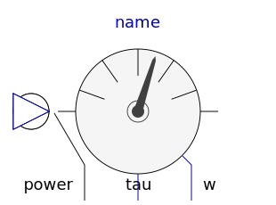

This package contains ideal sensor components that provide the connector variables as signals for further processing with the Modelica.Blocks library.
| Name | Description |
|---|---|
| AngleSensor | Ideal sensor to measure the absolute flange angle |
|  SpeedSensor | Ideal sensor to measure the absolute flange angular velocity |
| AccSensor | Ideal sensor to measure the absolute flange angular acceleration |
|  RelAngleSensor | Ideal sensor to measure the relative angle between two flanges |
|  RelSpeedSensor | Ideal sensor to measure the relative angular velocity between two flanges |
|  RelAccSensor | Ideal sensor to measure the relative angular acceleration between two flanges |
| TorqueSensor | Ideal sensor to measure the torque between two flanges (= flange_a.tau) |
|  PowerSensor | Ideal sensor to measure the power between two flanges (= flange_a.tau*der(flange_a.phi)) |
|  MultiSensor | Ideal sensor to measure the torque and power between two flanges (= flange_a.tau*der(flange_a.phi)) and the absolute angular velocity |